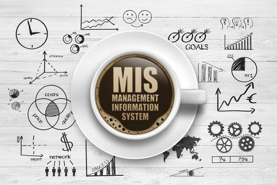

MIS & AI EthicsWebsite OverviewJesus AlamilloOctober 29, 2026Exploring Management Information Systems My Original Website OverviewHowdy! I am a college student building my first ever website specifically a Management Information Systems (MIS) and AI Ethics one. This website explores the following topics: How MIS is used in organizations and how technology affects daily business operations. It also discusses the importance of Artificial Intelligence and how it should be used responsibly in college and the workplace. Overall, this website provides an overview of how technology supports businesses and the importance of using it responsibly. AI-Polished Website OverviewHowdy! I am a college student creating my very first website, which focuses on Management Information Systems (MIS) and Artificial Intelligence (AI) Ethics. This website explores how MIS is used in organizations and how technology impacts daily business operations. It also discusses the growing importance of Artificial Intelligence and how it can be used responsibly in both college and the workplace. Throughout this website, I will highlight the benefits of these technologies and the importance of using them ethically. Additionally, I will explain how information systems help businesses improve efficiency and make better decisions. Overall, this website provides a better understanding of how technology supports businesses and why responsible technology use is essential. Additional MIS ResourcesExplore business technology research through Gartner. Learn more about technology and business from IBM Technology Topics. Read about emerging technologies at MIT Technology Review. MIS Topics Overview
|